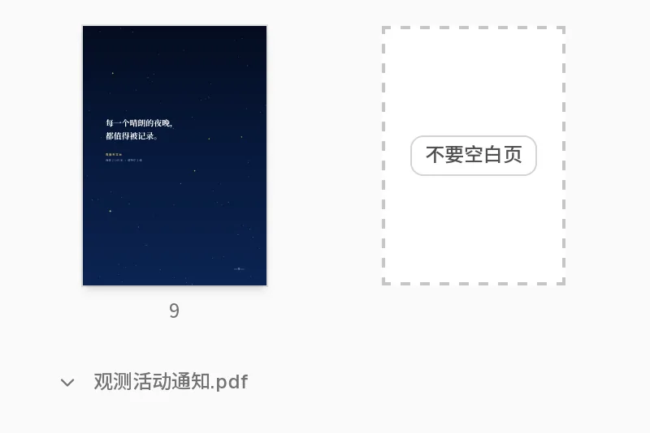
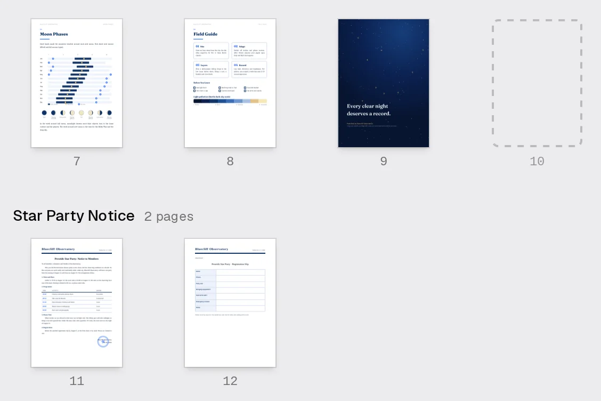

空白页Blank pages
打开“每个文件都从奇数页开始”，TFolio 只在需要的地方补一张空白页，双面打印时每份材料都从正面起头。也可以在任意两页之间手动插入。 Turn on Start every file on an odd page and TFolio adds a blank only where one is needed, so every file begins on a front side when printed double-sided. You can also insert one between any two pages.